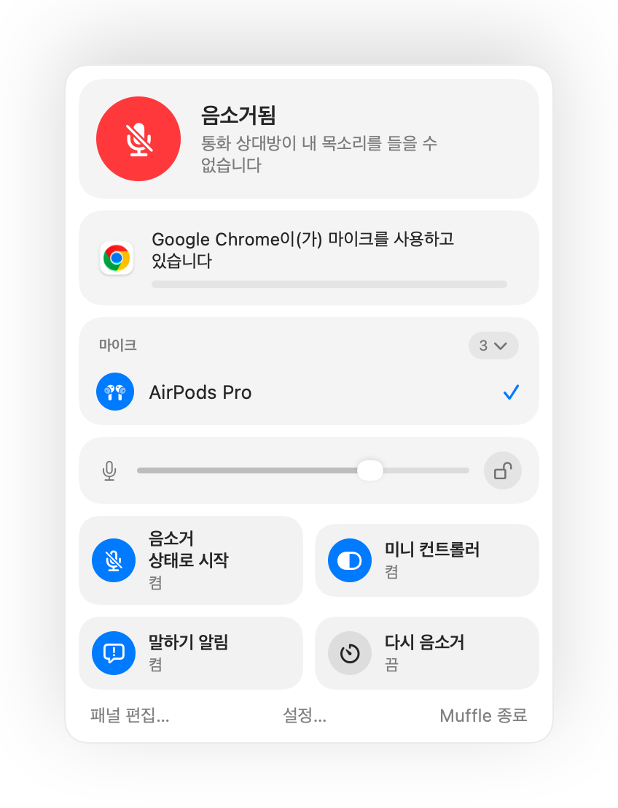

Mac에서 AirPods 음소거가 작동하지 않나요? 해결 방법은 다음과 같습니다
macOS에서는 AirPods 스템을 눌러 통화를 음소거할 수 있지만, 통화 앱이 이 기능을 지원할 때만 가능합니다. Chrome과 웹 화상회의를 비롯한 많은 앱이 이를 지원하지 않습니다. 스템을 누르면 짧은 오류 알림음이 울리고 마이크를 제어할 수 없다는 메시지가 뜨며 통화에는 내 목소리가 계속 들립니다.
Muffle은 모든 앱에 이 기능을 더해 줍니다. 누름 입력을 가로채 Mac의 마이크를 음소거하고 정상적인 음소거 알림음을 들려줍니다.
Muffle 3일 무료 체험하기Mac App Store 출시 예정
AirPods을 눌러 모든 앱을 음소거하는 설정 방법
- Muffle을 설치하고 마이크 접근을 허용합니다. macOS는 마이크를 사용할 수 있는 앱에만 누름 신호를 전달합니다.
- Muffle 설정에서 “AirPods을 눌러 음소거 전환” 옵션이 켜져 있는지 확인합니다.
- 통화에 참여합니다. 누름 동작은 앱이 마이크를 사용하고 있을 때만 음소거로 작동합니다.
- 스템을 한 번 누르면 음소거되고, 다시 누르면 음소거가 해제됩니다.

- 통화 중이 아닐 때는 스템을 누르면 평소처럼 음악이 재생되거나 일시 정지됩니다.
- AirPods 통화 제어 방식이 다르게 설정되어 있다면 시스템 설정의 AirPods 설정에서 확인하세요.
자주 묻는 질문
AirPods을 누르면 왜 Mac에서 오류음이 나나요?
통화 중인 앱이 AirPods 음소거 누름 기능을 지원하지 않아 macOS가 입력을 거부하기 때문입니다. Muffle을 실행하면 이 누름 입력으로 마이크를 직접 음소거할 수 있습니다.
어떤 AirPods 모델에서 음소거 누름 기능을 지원하나요?
AirPods Pro, AirPods 3세대 이후 모델, AirPods Max, 통화 제어를 지원하는 Beats 모델에서 사용할 수 있습니다.